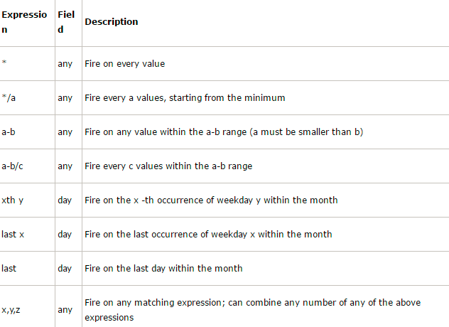

APScheduler是基于Quartz的一个Python定时任务框架。提供了基于日期、固定时间间隔以及crontab类型的任务，并且可以持久化任务。
在线文档：https://apscheduler.readthedocs.io/en/latest/userguide.html
一、安装APScheduler
pip install apscheduler二、基本概念
APScheduler有四大组件：
1、触发器 triggers ：
触发器包含调度逻辑。每个作业都有自己的触发器，用于确定下一个任务何时运行。除了初始配置之外，触发器是完全无状态的。
有三种内建的trigger:
（1）date: 特定的时间点触发
（2）interval: 固定时间间隔触发
（3）cron: 在特定时间周期性地触发
2、任务储存器 job stores：用于存放任务，把任务存放在内存（为默认MemoryJobStore）或数据库中。
3、执行器 executors： 执行器是将任务提交到线程池或进程池中运行，当任务完成时，执行器通知调度器触发相应的事件。
4、调度器 schedulers： 把上方三个组件作为参数，通过创建调度器实例来运行
根据开发需求选择相应的组件，下面是不同的调度器组件：
BlockingScheduler 阻塞式调度器：适用于只跑调度器的程序。
BackgroundScheduler 后台调度器：适用于非阻塞的情况，调度器会在后台独立运行。
AsyncIOScheduler AsyncIO调度器，适用于应用使用AsnycIO的情况。
GeventScheduler Gevent调度器，适用于应用通过Gevent的情况。
TornadoScheduler Tornado调度器，适用于构建Tornado应用。
TwistedScheduler Twisted调度器，适用于构建Twisted应用。
QtScheduler Qt调度器，适用于构建Qt应用。
三、使用步骤
1、新建一个调度器schedulers
2、添加调度任务
3、运行调度任务
四、使用实例
1、触发器date
特定的时间点触发，只执行一次。参数如下：
| 参数 | 说明 |
| run_date (datetime 或 str) | 作业的运行日期或时间 |
| timezone (datetime.tzinfo 或 str) | 指定时区 |
使用例子：
from datetime import datetime
from datetime import date
from apscheduler.schedulers.blocking import BlockingScheduler
def job(text):
print(text)
scheduler = BlockingScheduler()
# 在 2019-8-30 运行一次 job 方法
scheduler.add_job(job, 'date', run_date=date(2019, 8, 30), args=['text1'])
# 在 2019-8-30 01:00:00 运行一次 job 方法
scheduler.add_job(job, 'date', run_date=datetime(2019, 8, 30, 1, 0, 0), args=['text2'])
# 在 2019-8-30 01:00:01 运行一次 job 方法
scheduler.add_job(job, 'date', run_date='2019-8-30 01:00:00', args=['text3'])
scheduler.start()2、触发器interval
固定时间间隔触发。参数如下：
| 参数 | 说明 |
| weeks (int) | 间隔几周 |
| days (int) | 间隔几天 |
| hours (int) | 间隔几小时 |
| minutes (int) | 间隔几分钟 |
| seconds (int) | 间隔多少秒 |
| start_date (datetime 或 str) | 开始日期 |
| end_date (datetime 或 str) | 结束日期 |
| timezone (datetime.tzinfo 或str) |
使用例子：
import time
from apscheduler.schedulers.blocking import BlockingScheduler
def job(text):
t = time.strftime('%Y-%m-%d %H:%M:%S', time.localtime(time.time()))
print('{} --- {}'.format(text, t))
scheduler = BlockingScheduler()
# 每隔 1分钟 运行一次 job 方法
scheduler.add_job(job, 'interval', minutes=1, args=['job1'])
# 在 2019-08-29 22:15:00至2019-08-29 22:17:00期间，每隔1分30秒 运行一次 job 方法
scheduler.add_job(job, 'interval', minutes=1, seconds = 30, start_date='2019-08-29 22:15:00', end_date='2019-08-29 22:17:00', args=['job2'])
scheduler.start()
'''
运行结果：
job2 --- 2019-08-29 22:15:00
job1 --- 2019-08-29 22:15:46
job2 --- 2019-08-29 22:16:30
job1 --- 2019-08-29 22:16:46
job1 --- 2019-08-29 22:17:46
...余下省略...
'''3、触发器cron
在特定时间周期性地触发。参数如下：
| 参数 | 说明 |
| year (int 或 str) | 年，4位数字 |
| month (int 或 str) | 月 (范围1-12) |
| day (int 或 str) | 日 (范围1-31) |
| week (int 或 str) | 周 (范围1-53) |
| day_of_week (int 或 str) | 周内第几天或者星期几 (范围0-6 或者 mon,tue,wed,thu,fri,sat,sun) |
| hour (int 或 str) | 时 (范围0-23) |
| minute (int 或 str) | 分 (范围0-59) |
| second (int 或 str) | 秒 (范围0-59) |
| start_date (datetime 或 str) | 最早开始日期(包含) |
| end_date (datetime 或 str) | 最晚结束时间(包含) |
| timezone (datetime.tzinfo 或str) | 指定时区 |
这些参数支持算数表达式，取值格式有如下：

使用例子：
import time
from apscheduler.schedulers.blocking import BlockingScheduler
def job(text):
t = time.strftime('%Y-%m-%d %H:%M:%S', time.localtime(time.time()))
print('{} --- {}'.format(text, t))
scheduler = BlockingScheduler()
# 在每天22点，每隔 1分钟 运行一次 job 方法
scheduler.add_job(job, 'cron', hour=22, minute='*/1', args=['job1'])
# 在每天22和23点的25分，运行一次 job 方法
scheduler.add_job(job, 'cron', hour='22-23', minute='25', args=['job2'])
scheduler.start()
'''
运行结果：
job1 --- 2019-08-29 22:25:00
job2 --- 2019-08-29 22:25:00
job1 --- 2019-08-29 22:26:00
job1 --- 2019-08-29 22:27:00
...余下省略...
'''4、通过装饰器scheduled_job()添加方法
添加任务的方法有两种：
（1）通过调用add_job()---见上面1至3代码
（2）通过装饰器scheduled_job()：
第一种方法是最常用的方法。第二种方法主要是方便地声明在应用程序运行时不会更改的任务。该 add_job()方法返回一个apscheduler.job.Job实例，可以使用该实例稍后修改或删除该任务。
import time
from apscheduler.schedulers.blocking import BlockingScheduler
scheduler = BlockingScheduler()
@scheduler.scheduled_job('interval', seconds=5)
def job1():
t = time.strftime('%Y-%m-%d %H:%M:%S', time.localtime(time.time()))
print('job1 --- {}'.format(t))
@scheduler.scheduled_job('cron', second='*/7')
def job2():
t = time.strftime('%Y-%m-%d %H:%M:%S', time.localtime(time.time()))
print('job2 --- {}'.format(t))
scheduler.start()
'''
运行结果：
job2 --- 2019-08-29 22:36:35
job1 --- 2019-08-29 22:36:37
job2 --- 2019-08-29 22:36:42
job1 --- 2019-08-29 22:36:42
job1 --- 2019-08-29 22:36:47
job2 --- 2019-08-29 22:36:49
...余下省略...
'''